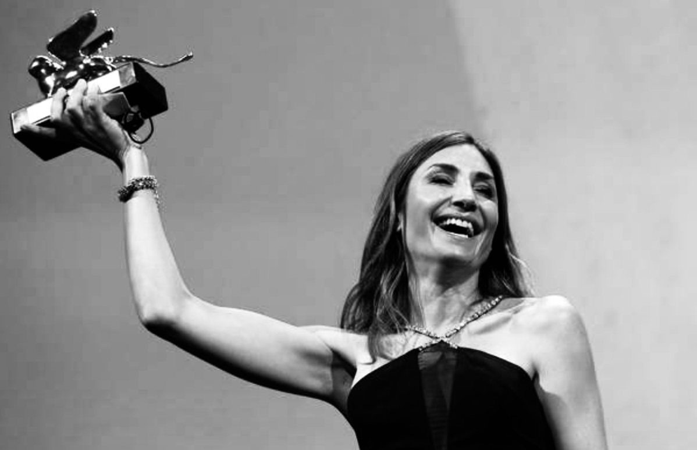

Audrey Diwan
We don't watch her, we are her.

"I don't want to make movies as a political manifesto, but when a story really interests me in a very intimate way, I always notice at some point that it has something political."
Here's a time line of Diwan's life:
ENGLISH / CHINESE
- 1980 - 出生于法国。父亲来自黎巴嫩，母亲的一半血统来自法国，另一半来自罗马尼亚。
- 2001 - Joined Technikart, a magazine. Meanwhile, she was also doing an internship at Com8, JoeyStarr's streetwear brand, writing a novel at lunch time.
- 2007 - Published her first novel La Fabrication d'un mensonge (The Making of a Lie). It took her reader on a seemingly innocuous dive into the world of bridal shops to better drift on a story in the form of a feminine urban road-movie. When presenting her with a prize for the novel, the director Claude Chabrol told her: “This could be a movie.”
- 2008 - Still writing for the magazine, but also started her career as a screenwriter. Her first work is a TV-movie called De feu et de glace (The fire and the ice).
- 2009 - Published her second novel De l'autre côté de l'été (The Other Side of Summer), trying to revisit the pangs of the woman in her fifties who offers herself the services of an escort boy.
- 2010 - During her vacations she was working as a scriptwriter for the Canal + series, Mafiosa.
- 2013 - Published How to be a Parisian co-written with Anne Berest and Caroline de Maigret directly in the United States, a bestseller translated into 31 languages. But the desire for directing has taken over.
- 2018 - First encountered the book The Event, an autobiographically informed novel by Annie Ernaux, right after she herself had an abortion.
- 2019 - After co-writing several crime thrillers with Cédric Jimenez, she made the directorial debut with the romantic drama Losing It.
- 2021 - Her 2021 film Happening was selected for the main competition at the 78th Venice International Film Festival, where it was subsequently awarded the Golden Lion, thus making her the sixth female director to ever win this award.
"With my father being Lebanese, we always had in mind questions regarding the war—what you have and what you can lose. My father lost his father when he was three months old, and my grandmother raised them working as a school principal. On my mother's side, my grandfather wanted to be an opera singer, but he lost a lung during the war."
Her colleague in Technikart:
"When she joined Technikart some twenty years ago, Audrey introduced us to Mathis, a bar in the 8th arrondissement where people hid (and where she more or less knew everyone)...
"Audrey is always late, Audrey is just passing by because she has an appointment afterwards, and another one after… There has always been something energetic and oxymoronic about this young woman from the beautiful neighborhoods, known to be registered in the young socialist section of the 9th."
"When she joined Technikart some twenty years ago, Audrey introduced us to Mathis, a bar in the 8th arrondissement where people hid (and where she more or less knew everyone)...
"Audrey is always late, Audrey is just passing by because she has an appointment afterwards, and another one after… There has always been something energetic and oxymoronic about this young woman from the beautiful neighborhoods, known to be registered in the young socialist section of the 9th."
"I've always wanted to write, but I had no desire for a job. I have accumulated experiences with the sole intention of remaining free. The risk of trying things is to be disappointed by oneself. I was often wrong and there is a value in error, we don't say it enough...
"It was not doing too badly in terms of sales. But I felt like I wasn't mature enough, it was too early. I had fun writing, but I needed to experience other things."
"It was not doing too badly in terms of sales. But I felt like I wasn't mature enough, it was too early. I had fun writing, but I needed to experience other things."
"When I decided to direct, I felt it was a deep, visceral desire, and I felt like I was ready. Writing, making-offs on other directors' sets, co-responsibility for a magazine that taught me how to make a lot of skills work together... I didn't have a secret plan, but in retrospect I did. Impression is that, by chance, I did things well."
"Clandestine abortion is a difficult subject to finance. You have to explain it, say that it also talks about desire, feminine pleasure and the desire for freedom. And, even if I don't have proof of what I'm saying, my feeling is that there are people who are not necessarily for abortion. Or, in any case, who do not want to be told about it. There is a growing excitement in society on the subject: this story raises the questions that girls in Texas are asking themselves today. While regularly I heard: 'in France the law is passed. Why make a film now?' I would love to see the same question asked of directors who come up with World War II scripts."
"“I felt ready because I had things to say for myself and I didn't want to share them with anybody else.”
Chloe Zhao, the Nomadland Best Picture winner who was on the jury, telling her at the ceremony, "When you will be told that we've picked a woman, tell them we picked a movie."
If you have time, you should read more about this incredible woman on her interviews from Financial Times, WMagazine and Technikart.